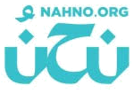

مرحباً بكم في البوابة الرسمية لتمثيل منصة نَحْنُ (Nahno) داخل صرح جامعة إربد الأهلية. معاً لتوثيق ساعاتك التطوعية رسمياً، وصقل مهاراتك القيادية، والمساهمة الفاعلة في رفعة الوطن وخدمة المجتمع الأردني تحت مظلة اعتماد أكاديمي موثوق.
عمادة شؤون الطلبة - دائرة النشاطات
سفير منصة نحن - جامعة إربد الأهلية
المنصة الوطنية الأردنية الموحدة لتطوع ومشاركة الشباب، نحو مجتمع مترابط وعطاء شبابي لا ينضب.
أُطلقت منصة "نَحْنُ" استجابةً للرؤى الملكية السامية في تمكين الشباب الأردني وغرس قيم التطوع والمواطنة الفاعلة في صلب مسيرتهم الأكاديمية والمجتمعية.
تعمل المنصة كجسرٍ حيوي يربط بين طاقات الطلبة ومؤسسات المجتمع المدني والقطاعين العام والخاص، لتوفير فرص تطوعية نوعية تضمن حفظ حقوق المتطوع، وتوثيق ساعاته في سجل وطني موثوق يرافقه طيلة مسيرته الأكاديمية والمهنية.
حفظ الساعات التطوعية رقمياً وتوثيقها بشهادات رسمية معتمدة قابلة للتحقق الفوري.
اكتساب خبرات ميدانية في إدارة الفعاليات والقيادة والعمل الجماعي وحل المشكلات.
المساهمة المباشرة في تنمية محافظة إربد والمحافظات المجاورة وتعزيز التكافل الإنساني.
احتساب الساعات التطوعية ضمن متطلبات التخرج وسجل الأنشطة غير الصفية المعتمدة.
شراكة أكاديمية متجذرة لتمثيل المنصة داخل الحرم الجامعي وتوفير بيئة تطوعية مثالية لجميع طلبة الكليات.
تعترف عمادة شؤون الطلبة في جامعة إربد الأهلية بالساعات التطوعية الموثقة عبر منصة نحن لاحتسابها كخدمة مجتمع وساعات لامنهجية تدعم مسيرة التخرج وسجل التميز.
تنظيم ورشات ومؤتمرات وحملات تشجير وتنظيم حفلات التخرج واليوم المفتوح بمشاركة وإدارة مباشرة من طلبة جامعة إربد الأهلية المتطوعين.
اختر المسار الأقرب لشغفك وتخصصك، وابدأ بترك أثر حقيقي في جامعتك ومجتمعك.
المشاركة في إدارة وتنظيم المؤتمرات العلمية، مهرجانات استقبال الطلبة الجدد، المعارض الفنية، ومراسم حفلات التخرج الجامعية.
حملات تشجير حدائق الجامعة ومحافظة إربد، مبادرات فرز وتدوير النفايات، وورش التوعية البيئية لمكافحة التغير المناخي.
مساعدة زملائك في شرح المواد الصعبة، دعم الطلبة من ذوي الإعاقة، وإدارة جلسات المذاكرة الجماعية التفاعلية.
توزيع الطرود الغذائية في شهر رمضان، دعم الجمعيات الخيرية في إربد، تنظيم أيام ترفيهية للأيتام وكبار السن.
تصميم البوسترات والرسومات التوعوية، إدارة منصات التواصل الاجتماعي للمبادرات، وتوثيق الفعاليات تصويراً وإنتاجاً للمحتوى.
المشاركة في أيام الفحص الطبي المجاني بالتعاون مع كليات التمريض والصيدلة، وحملات التبرع بالدم داخل الجامعة.
حرّك المؤشر لمعرفة مستواك التكريمي، الشهادة المستحقة، والنقاط المضافة لملفك الأكاديمي في جامعة إربد الأهلية.
💡 يتم احتساب هذه الساعات مباشرة في عمادة شؤون الطلبة بموجب البروتوكول الرسمي المشترك مع منصة نحن الوطنية.
مستوى متقدم يمنحك اعتماداً رسمياً لساعات خدمة المجتمع
إرشادات تفصيلية تغطي مسارك التطوعي من لحظة التسجيل وحتى اعتماد ساعاتك واستلام شهادتك الرسمية من عمادة شؤون الطلبة.
الخطوة التأسيسية التي تضمن ربط جهودك التطوعية بسجلك الأكاديمي الرسمي.
قم بزيارة الرابط الرسمي nahno.org والضغط على "تسجيل متطوع جديد".
أدخل اسمك المطابق للهوية الجامعية ورقم هاتفك والبريد الإلكتروني المعتمد.
في حقل المؤسسة التعليمية، اختر بدقة "جامعة إربد الأهلية" لربط حسابك بعمادة شؤون الطلبة وتفعيل احتساب الساعات التلقائي.
استعرض الفعاليات المعلنة داخل الحرم الجامعي أو محافظة إربد واضغط على (تطوع الآن).
ضوابط الحضور الميداني التي تضمن توثيق ساعاتك بنزاهة ومهنية.
التواجد في موقع النشاط قبل 15 دقيقة من الموعد المقرر ولقاء المشرف الميداني للفعالية.
احرص على مسح رمز QR الخاص بالفعالية بواسطة هاتفك الذكي أو التوقيع على كشف الحضور الورقي المعتمد لدى المشرف.
الالتزام بأخلاقيات العمل التطوعي وارتداء الوشاح أو الشارة الخاصة بالمنصة وتأدية المهام الموكلة بإيجابية.
تأكيد مغادرة الفعالية لدى المشرف الميداني لضمان احتساب إجمالي الساعات الفعلية المنجزة.
كيفية تحويل ساعاتك التطوعية إلى نقاط أكاديمية وشهادات موثقة رسمياً.
يقوم المشرف الميداني وعمادة شؤون الطلبة بالمصادقة الرقمية على الساعات لتظهر مباشرة في حسابك على المنصة.
تُسجل الساعات تلقائياً في ملفك الجامعي وتُعتمد ضمن متطلب خدمة المجتمع والأنشطة اللامنهجية في الجامعة.
يمكنك من ملفك الشخصي تنزيل شهادة تطوع رسمية موشحة بأختام المنصة والجامعة ومزودة برمز تحقق وطني QR.
تُضاف الساعات المعتمدة رسمياً إلى سجلك لدعم مسيرتك الأكاديمية والمهنية وفرصك في سوق العمل بعد التخرج.
معايير عامة تضمن توفير بيئة تطوعية آمنة ومحفزة لجميع الطلبة
كل ما يدور في ذهنك حول التطوع، احتساب الساعات، والبروتوكول الأكاديمي.
منصة "نَحْنُ" هي المنصة الوطنية الأردنية لتطوع ومشاركة الشباب، أُطلقت بشراكة استراتيجية بين "نوَى" (إحدى مبادرات مؤسسة ولي العهد) ومنظمة الأمم المتحدة للطفولة (يونيسف) وبالشراكة مع وزارة الشباب، بهدف توحيد الجهود التطوعية في المملكة وتوثيق الساعات رسمياً في سجل موثوق.
تتم الآلية بالتقديم على الفرص المتاحة لجامعة إربد الأهلية عبر الموقع الإلكتروني لمنصة نحن، ثم الحضور وتأكيد التسجيل لدى المشرف الميداني للفعالية. بعد انتهاء النشاط، تقوم عمادة شؤون الطلبة بالمصادقة عليها لتظهر تلقائياً في ملفك الشخصي ورصيدك الأكاديمي.
نعم، وفق بروتوكول التعاون المعتمد، تعترف عمادة شؤون الطلبة بالساعات التطوعية الموثقة عبر منصة نحن وتُحتسب ضمن متطلب خدمة المجتمع وسجل التميز والأنشطة اللامنهجية، وتمنح الطالب شهادة معتمدة مزودة برمز تحقق وطني QR.
ببساطة: أنشئ حسابك على nahno.org، اختر جامعة إربد الأهلية من قائمة المؤسسات التعليمية، تصفح الفرص المتاحة واضغط على "تطوع الآن". ستصلك تفاصيل الموعد والمكان من خلال إشعار في حسابك أو رسالة نصية.
لا يشترط أي معدل تراكمي! التطوع متاح لجميع طلبة جامعة إربد الأهلية في جميع الكليات والمراحل الدراسية. الشرط الوحيد هو امتلاك حساب فعال على منصة نحن، والالتزام بمواعيد الفعالية وأخلاقيات العمل الجامعي.
متصل الآن | جامعة إربد الأهلية ⚡